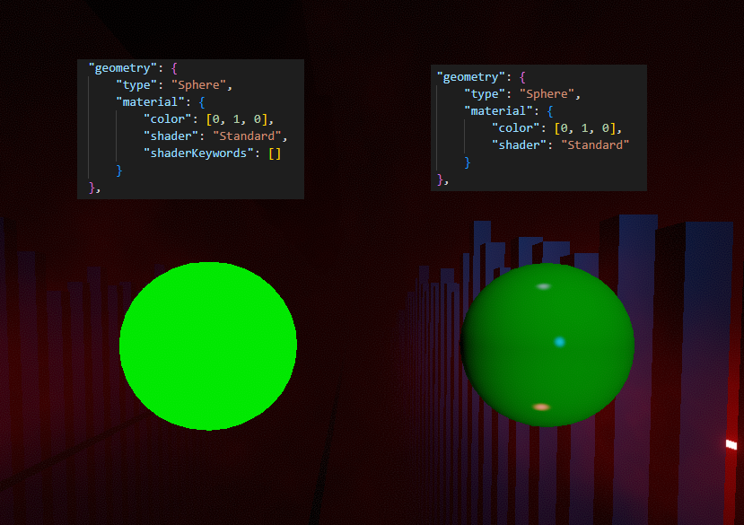

Environment Enhancements
From simply removing a logo to creating completely hand modelled scenes, Chroma does it all with its environment tools.
Tip
Set "PrintEnvironmentEnhancementDebug": true in the Chroma.json config file to print extra environment enhancement information to your console.
Adding Commands
Environments are modified by a list of "commands" in the "environment" array. The commands are ran sequentially at the beginning of the map, and each one will find an object(s) using the id and lookup method, and then set the properties on them.
"customData"->"environment"(array)"id": stringThe ID to use when looking up the GameObject."lookupMethod": "Regex"/"Exact"/"Contains"/"StartsWith"/"EndsWith"How to use the ID to search. Regex allows for the greatest control, such as future-proofing by using wildcards."duplicate": intHow many instances of this GameObject to duplicate. This changes the scope of the command and all the following properties will affect the duplicated objects instead."active": boolWhen false, disables the GameObject."scale": [x, y, z](floats) Sets scale of GameObject."position": [x, y, z](floats) Sets position of GameObject."localPosition": [x, y, z](floats) Sets localPosition of GameObject."rotation": [x, y, z](floats) Sets rotation of GameObject."localRotation": [x, y, z](floats) Sets localRotation of GameObject."track": stringAdds the object to a track, allowing you to animate it. See TransformController"components": object: See below.
All of the custom data is stored in the difficulty's json.
Example
Components
Allows you to change fields of components found on game objects.
"environment"->"components"component name: The name of the component to look for.field: The field of the component to affect.
Available components:
"ILightWithId""lightID": int: Which ID to assign. For use with thelightIDtag for lighting events (Cannot be animated)"type": int: Which event type to active on. (Cannot be animated)
"BloomFogEnvironment": Will always be found on the[0]Environmentobject."attenuation": float: attenuation is the fog density. logarithmic"offset": float: offset I have no idea"startY": float: startY is starting Y of the gradient thing"height": float: height is the gradient length of the dissolving plane fog
"TubeBloomPrePassLight""colorAlphaMultiplier": float"bloomFogIntensityMultiplier": float
Example
Additionally, components can be animated using the AnimateComponent custom event.
TransformController
Any GameObject assigned a track will automatically be assigned a TransformController. This is a standard Component which will follow position, localPosition, rotation, localRotation, and scale properties on a Track. These are the standard Unity properties on a Transform.
Note
Because position and localPosition both control position (and similarly for rotation), only one of them can be set. If you attempt to set both at the same time, only localPosition will be set.
Geometry
Tired of only being able to move existing objects? Geometry allows you to create your own primitive shapes. Instead of defining "id" and "lookupMethod", use "geometry".
"version": "3.0.0",
"customData": {
"environment": [
{
"geometry": {
"type": "Cylinder",
"material": {
"color": [0, 1, 0, 0],
"shader": "Standard",
}
},
"scale": [0.1, 0.1, 0.1],
"track": "cylindertrack"
}
]
}
"environment"->"geometry""type": stringWhat kind of primitive to create. (Sphere, Capsule, Cylinder, Cube, Plane, Quad, Triangle)"material": string/objectWhat material to assign the object. Can be referred to by name to reuse, or defined here."collision": boolWhether or not the object has a collider. Useful if you want note debris to bounce off.
Material
"color": [r, g, b, a](floats)"shader": "Standard"/"OpaqueLight"/"TransparentLight"What shader to use. OpaqueLight and TransparentLight will create a TubeBloomPrePassLightWithId and TubeBloomPrePassLight and can be controlled by standard lighting events. TransparentLight will be invisible when the light is turned off."track": stringAssign the material to a track, allowing you to animate thecolor."shaderKeywords": string[]By default, each shader has its default keywords. This allows overwriting the keywords of the shader.
Danger
The Standard shader has changed in BS v1.38, setting it to empty shaderKeywords no longer makes it appear full bright. Chroma will automatically add ["MULTIPLY_REFLECTIONS", "FOG", "DIFFUSE", "REFLECTION_PROBE_BOX_PROJECTION"] when using an empty array to attempt to keep the Standard shader visible on old maps.

Tip
Every object needs a material, however creating materials can be laggy! The best way to assign materials is to create one initially, and then reuse it whenever you need one. It is recommended you reuse materials whenever possible as it is the most performant way of creating many geometry objects.
"customData": {
"materials": {
"green standard": {
"color": [0, 1, 0, 0],
"shader": "Standard"
}
},
"environment": [
{
"geometry": {
"type": "Cylinder",
"material": "green standard"
},
"scale": [0.1, 0.1, 0.1],
},
{
"geometry": {
"type": "Sphere",
"material": "green standard"
},
"position": [1, 1, 1]
}
]
}